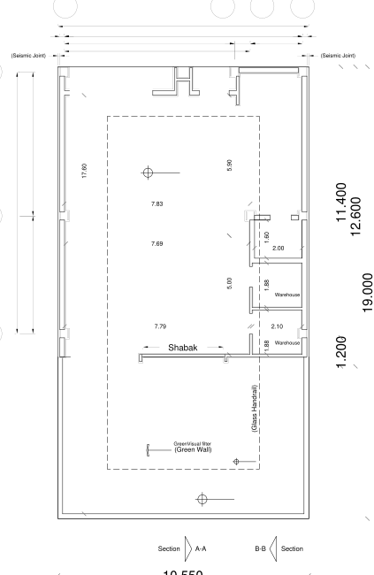

نقشه · طرح ۱۳۹۹
پلان همکف — پارکینگ — نسخهٔ ۱۳۹۹/۰۴/۲۱
همکف (±۰٫۰۰)

{kind=link}
برداشت
همکف نسخهٔ نخست: سه خودرو در دهانهٔ ۷٫۸۳ متری و یکی در حیاط، دو انباری در شرق، و دیوار سبز و مشبک رو به حیاط. کف شیشهای مات روی گودال و «طاق سبز» هنوز نیست؛ آنها در بازنگری ۰۶/۱۳ اضافه شد.
با شاخصها میخواند
- شاخص ۸: دیوار سبز، طاق سبز و فیلتر بصری سبز دور خالیِ حیاط؛ سبزی بهجای چند باغچهٔ مربع.
- شاخص ۱۱: مشبک میان پارکینگ و حیاط، نخستین پاسخ به پنجرهای که پشت پرده نماند.
- شاخص ۱۰: دو انباری پشت هم کنار هستهٔ پله.
- شاخص ۱۹: آسانسور کنار باکس پله در گوشهٔ شمالشرقی، از پارکینگ تا اتاقک بام.
چه چیزی را کم دارد
- جای دوچرخه و موتور نیست.
- ورود پیاده از همان دهانهٔ خودرو است؛ مسیر جدایی برای آدمها نیست.
- شاخص پانزدهم سادگی میخواست؛ کف شیشهای مات هزینهبر است و برآوردی نشده.
چه پرسشی باز میماند
- درخت: خالیِ حیاط دور درختی است که گونه و نورش معلوم نیست.
- تناقض پنجره: مشبک اینجا فقط در همکف است؛ در طبقات چه میشود؟
- هزینه به مقدار، نه به ریال: کف شیشهای و مشبک چقدر مصالح میخورد؟
جزئیات روی شیت
- سه خودرو کنار هم در نوار غربی، یکی در حیاط
- دیوار سبز (Green Wall) و مشبک (Shabak) میان پارکینگ و حیاط
- دو انباری در نوار شرقی
- پله و آسانسور در شمالشرق
فضاها
پارکینگ (۳ خودرو)، ورودی، پلکان، آسانسور، انباری (۲)، مشبک، خالیِ گودال باغچه، کف شیشهٔ مات، طاق سبز، دیوار سبز، حیاط (۱ خودرو)
یادداشت
نسخهٔ ۱۳۹۹/۰۴/۲۱ از پوشهٔ «Latest» خانواده — سری اصلی طرح ۱۳۹۹ روی این سایت. بازنگری ۱۳۹۹/۰۶/۱۳ همین برگه در «نسخهٔ دوم» کنار آن آمده. نقشههای بازترسیمشده و مدل سهبعدی از نسخهٔ ۰۶/۱۳ کشیده شدهاند و تفاوتها اندک است.